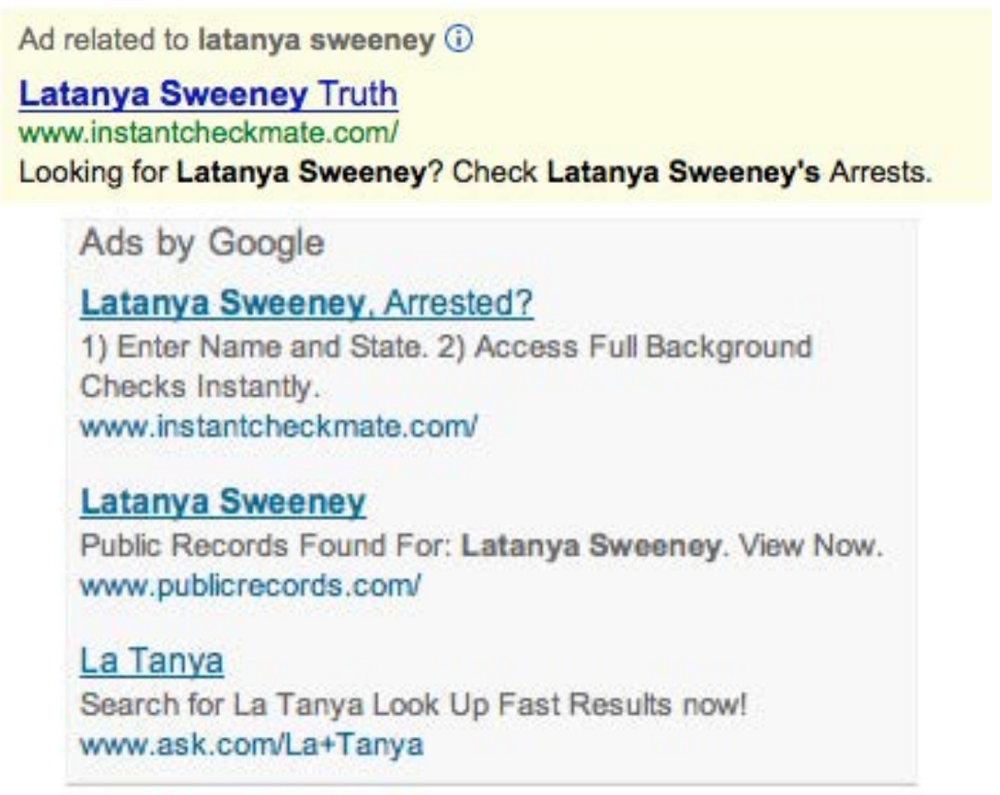
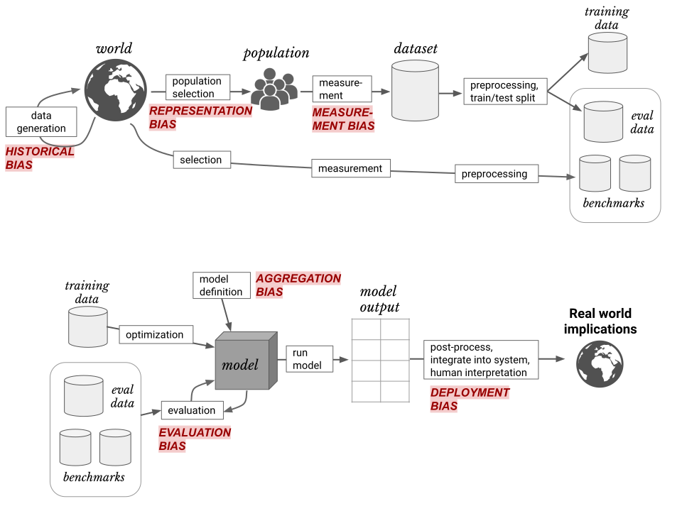
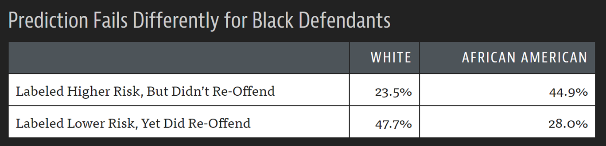
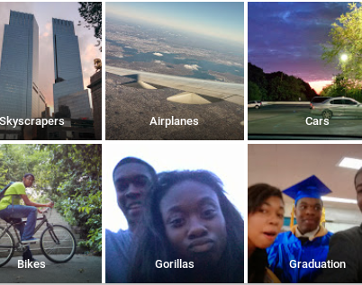
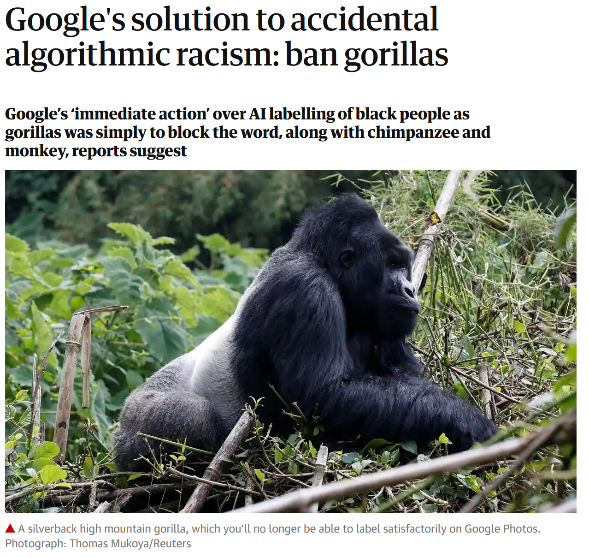
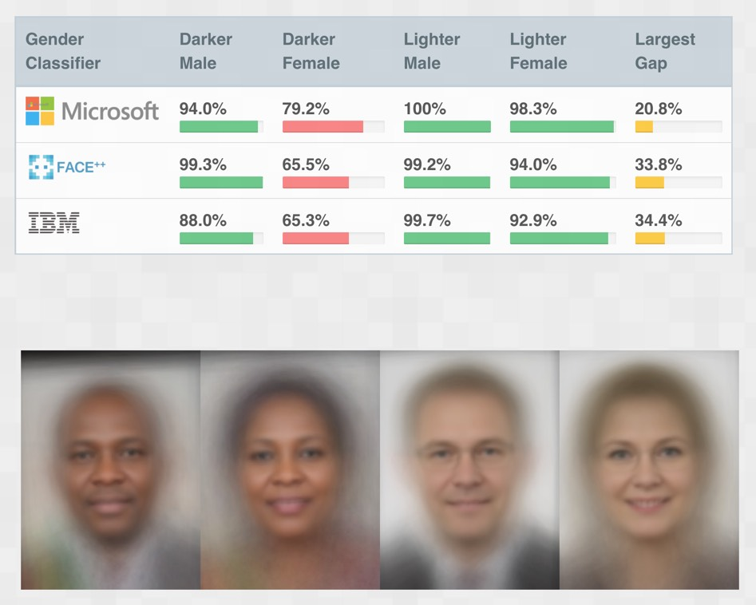
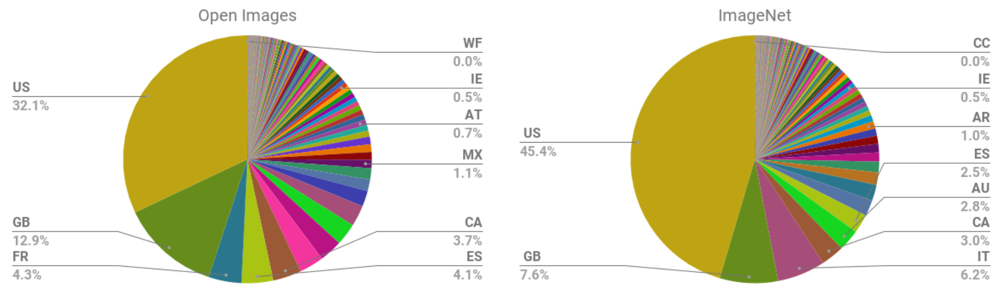
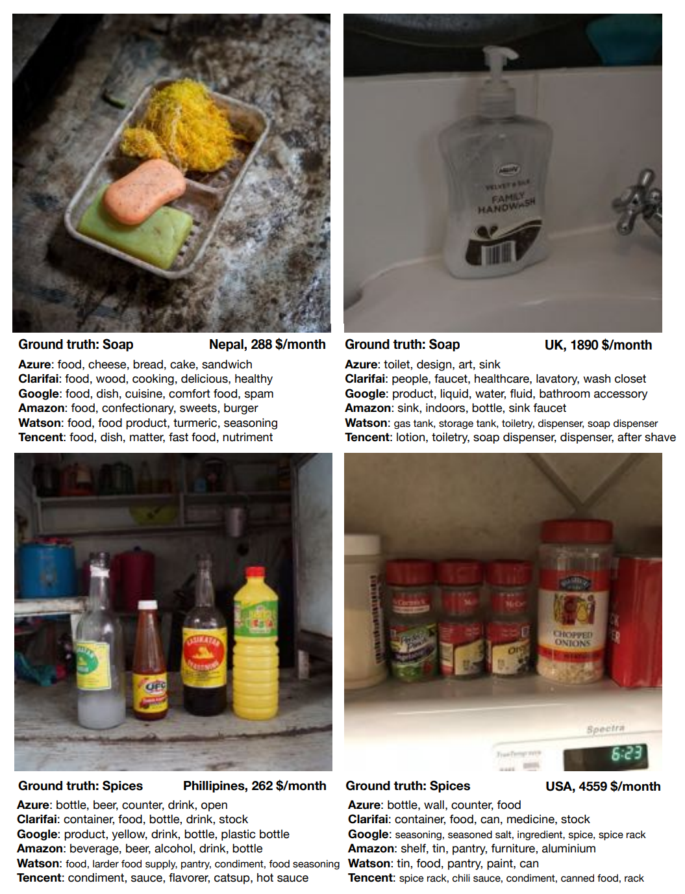
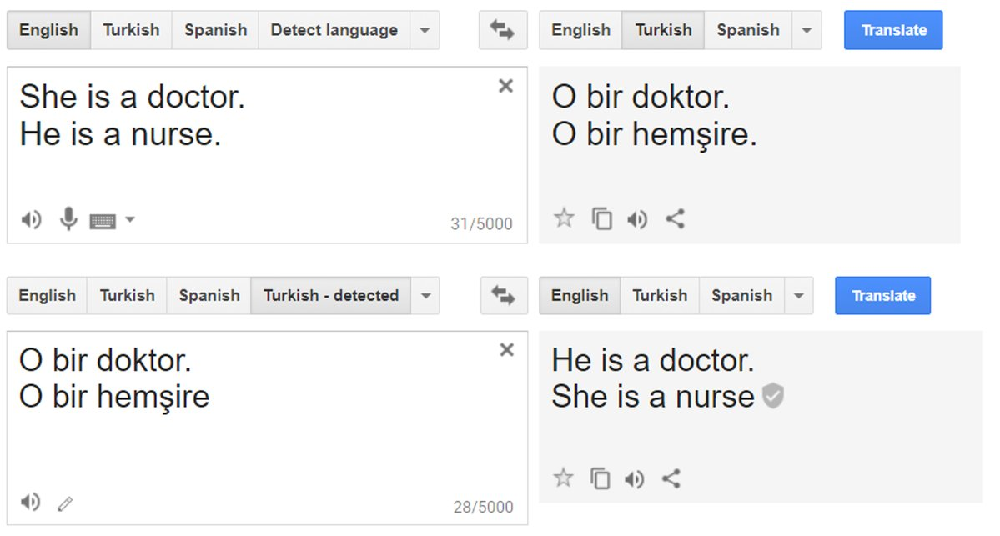
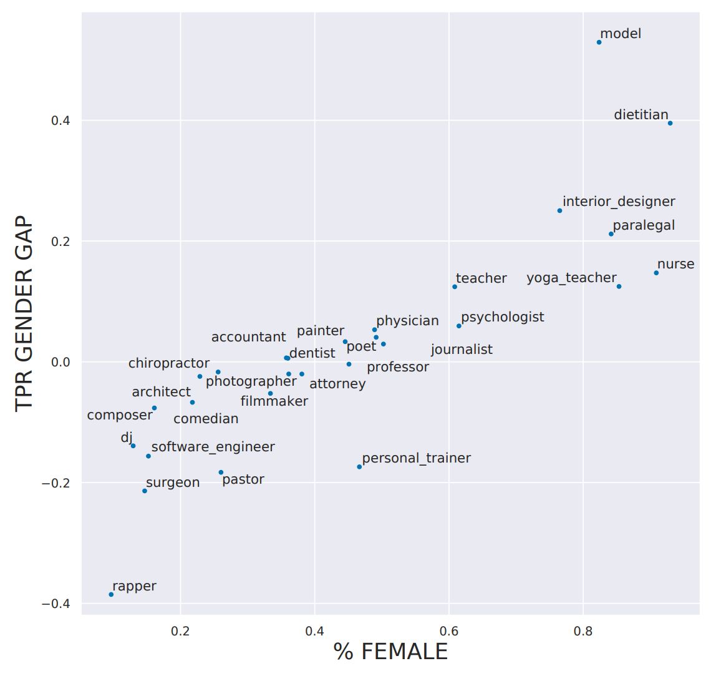

#hide
!pip install -Uqq fastbook
import fastbook
fastbook.setup_book()
Data Ethics¶
Sidebar: Acknowledgement: Dr. Rachel Thomas¶
This chapter was co-authored by Dr. Rachel Thomas, the cofounder of fast.ai, and founding director of the Center for Applied Data Ethics at the University of San Francisco. It largely follows a subset of the syllabus she developed for the Introduction to Data Ethics course.
End sidebar¶
As we discussed in Chapters 1 and 2, sometimes machine learning models can go wrong. They can have bugs. They can be presented with data that they haven't seen before, and behave in ways we don't expect. Or they could work exactly as designed, but be used for something that we would much prefer they were never, ever used for.
Because deep learning is such a powerful tool and can be used for so many things, it becomes particularly important that we consider the consequences of our choices. The philosophical study of ethics is the study of right and wrong, including how we can define those terms, recognize right and wrong actions, and understand the connection between actions and consequences. The field of data ethics has been around for a long time, and there are many academics focused on this field. It is being used to help define policy in many jurisdictions; it is being used in companies big and small to consider how best to ensure good societal outcomes from product development; and it is being used by researchers who want to make sure that the work they are doing is used for good, and not for bad.
As a deep learning practitioner, therefore, it is likely that at some point you are going to be put in a situation where you need to consider data ethics. So what is data ethics? It's a subfield of ethics, so let's start there.
J: At university, philosophy of ethics was my main thing (it would have been the topic of my thesis, if I'd finished it, instead of dropping out to join the real world). Based on the years I spent studying ethics, I can tell you this: no one really agrees on what right and wrong are, whether they exist, how to spot them, which people are good, and which bad, or pretty much anything else. So don't expect too much from the theory! We're going to focus on examples and thought starters here, not theory.
In answering the question "What Is Ethics", The Markkula Center for Applied Ethics says that the term refers to:
- Well-founded standards of right and wrong that prescribe what humans ought to do
- The study and development of one's ethical standards.
There is no list of right answers. There is no list of do and don't. Ethics is complicated, and context-dependent. It involves the perspectives of many stakeholders. Ethics is a muscle that you have to develop and practice. In this chapter, our goal is to provide some signposts to help you on that journey.
Spotting ethical issues is best to do as part of a collaborative team. This is the only way you can really incorporate different perspectives. Different people's backgrounds will help them to see things which may not be obvious to you. Working with a team is helpful for many "muscle-building" activities, including this one.
This chapter is certainly not the only part of the book where we talk about data ethics, but it's good to have a place where we focus on it for a while. To get oriented, it's perhaps easiest to look at a few examples. So, we picked out three that we think illustrate effectively some of the key topics.
Key Examples for Data Ethics¶
We are going to start with three specific examples that illustrate three common ethical issues in tech:
- Recourse processes—Arkansas's buggy healthcare algorithms left patients stranded.
- Feedback loops—YouTube's recommendation system helped unleash a conspiracy theory boom.
- Bias—When a traditionally African-American name is searched for on Google, it displays ads for criminal background checks.
In fact, for every concept that we introduce in this chapter, we are going to provide at least one specific example. For each one, think about what you could have done in this situation, and what kinds of obstructions there might have been to you getting that done. How would you deal with them? What would you look out for?
Bugs and Recourse: Buggy Algorithm Used for Healthcare Benefits¶
The Verge investigated software used in over half of the US states to determine how much healthcare people receive, and documented their findings in the article "What Happens When an Algorithm Cuts Your Healthcare". After implementation of the algorithm in Arkansas, hundreds of people (many with severe disabilities) had their healthcare drastically cut. For instance, Tammy Dobbs, a woman with cerebral palsy who needs an aid to help her to get out of bed, to go to the bathroom, to get food, and more, had her hours of help suddenly reduced by 20 hours a week. She couldn’t get any explanation for why her healthcare was cut. Eventually, a court case revealed that there were mistakes in the software implementation of the algorithm, negatively impacting people with diabetes or cerebral palsy. However, Dobbs and many other people reliant on these healthcare benefits live in fear that their benefits could again be cut suddenly and inexplicably.
Feedback Loops: YouTube's Recommendation System¶
Feedback loops can occur when your model is controlling the next round of data you get. The data that is returned quickly becomes flawed by the software itself.
For instance, YouTube has 1.9 billion users, who watch over 1 billion hours of YouTube videos a day. Its recommendation algorithm (built by Google), which was designed to optimize watch time, is responsible for around 70% of the content that is watched. But there was a problem: it led to out-of-control feedback loops, leading the New York Times to run the headline "YouTube Unleashed a Conspiracy Theory Boom. Can It Be Contained?". Ostensibly recommendation systems are predicting what content people will like, but they also have a lot of power in determining what content people even see.
Bias: Professor Latanya Sweeney "Arrested"¶
Dr. Latanya Sweeney is a professor at Harvard and director of the university's data privacy lab. In the paper "Discrimination in Online Ad Delivery" (see <

Being a computer scientist, she studied this systematically, and looked at over 2000 names. She found a clear pattern where historically Black names received advertisements suggesting that the person had a criminal record, whereas, white names had more neutral advertisements.
This is an example of bias. It can make a big difference to people's lives—for instance, if a job applicant is Googled it may appear that they have a criminal record when they do not.
Why Does This Matter?¶
One very natural reaction to considering these issues is: "So what? What's that got to do with me? I'm a data scientist, not a politician. I'm not one of the senior executives at my company who make the decisions about what we do. I'm just trying to build the most predictive model I can."
These are very reasonable questions. But we're going to try to convince you that the answer is that everybody who is training models absolutely needs to consider how their models will be used, and consider how to best ensure that they are used as positively as possible. There are things you can do. And if you don't do them, then things can go pretty badly.
One particularly hideous example of what happens when technologists focus on technology at all costs is the story of IBM and Nazi Germany. In 2001, a Swiss judge ruled that it was not unreasonable "to deduce that IBM's technical assistance facilitated the tasks of the Nazis in the commission of their crimes against humanity, acts also involving accountancy and classification by IBM machines and utilized in the concentration camps themselves."
IBM, you see, supplied the Nazis with data tabulation products necessary to track the extermination of Jews and other groups on a massive scale. This was driven from the top of the company, with marketing to Hitler and his leadership team. Company President Thomas Watson personally approved the 1939 release of special IBM alphabetizing machines to help organize the deportation of Polish Jews. Pictured in <

But this was not an isolated incident—the organization's involvement was extensive. IBM and its subsidiaries provided regular training and maintenance onsite at the concentration camps: printing off cards, configuring machines, and repairing them as they broke frequently. IBM set up categorizations on its punch card system for the way that each person was killed, which group they were assigned to, and the logistical information necessary to track them through the vast Holocaust system. IBM's code for Jews in the concentration camps was 8: some 6,000,000 were killed. Its code for Romanis was 12 (they were labeled by the Nazis as "asocials," with over 300,000 killed in the Zigeunerlager, or “Gypsy camp”). General executions were coded as 4, death in the gas chambers as 6.
Of course, the project managers and engineers and technicians involved were just living their ordinary lives. Caring for their families, going to the church on Sunday, doing their jobs the best they could. Following orders. The marketers were just doing what they could to meet their business development goals. As Edwin Black, author of IBM and the Holocaust (Dialog Press) observed: "To the blind technocrat, the means were more important than the ends. The destruction of the Jewish people became even less important because the invigorating nature of IBM's technical achievement was only heightened by the fantastical profits to be made at a time when bread lines stretched across the world."
Step back for a moment and consider: How would you feel if you discovered that you had been part of a system that ended up hurting society? Would you be open to finding out? How can you help make sure this doesn't happen? We have described the most extreme situation here, but there are many negative societal consequences linked to AI and machine learning being observed today, some of which we'll describe in this chapter.
It's not just a moral burden, either. Sometimes technologists pay very directly for their actions. For instance, the first person who was jailed as a result of the Volkswagen scandal, where the car company was revealed to have cheated on its diesel emissions tests, was not the manager that oversaw the project, or an executive at the helm of the company. It was one of the engineers, James Liang, who just did what he was told.
Of course, it's not all bad—if a project you are involved in turns out to make a huge positive impact on even one person, this is going to make you feel pretty great!
Okay, so hopefully we have convinced you that you ought to care. But what should you do? As data scientists, we're naturally inclined to focus on making our models better by optimizing some metric or other. But optimizing that metric may not actually lead to better outcomes. And even if it does help create better outcomes, it almost certainly won't be the only thing that matters. Consider the pipeline of steps that occurs between the development of a model or an algorithm by a researcher or practitioner, and the point at which this work is actually used to make some decision. This entire pipeline needs to be considered as a whole if we're to have a hope of getting the kinds of outcomes we want.
Normally there is a very long chain from one end to the other. This is especially true if you are a researcher, where you might not even know if your research will ever get used for anything, or if you're involved in data collection, which is even earlier in the pipeline. But no one is better placed to inform everyone involved in this chain about the capabilities, constraints, and details of your work than you are. Although there's no "silver bullet" that can ensure your work is used the right way, by getting involved in the process, and asking the right questions, you can at the very least ensure that the right issues are being considered.
Sometimes, the right response to being asked to do a piece of work is to just say "no." Often, however, the response we hear is, "If I don’t do it, someone else will." But consider this: if you’ve been picked for the job, you’re the best person they’ve found to do it—so if you don’t do it, the best person isn’t working on that project. If the first five people they ask all say no too, even better!
Integrating Machine Learning with Product Design¶
Presumably the reason you're doing this work is because you hope it will be used for something. Otherwise, you're just wasting your time. So, let's start with the assumption that your work will end up somewhere. Now, as you are collecting your data and developing your model, you are making lots of decisions. What level of aggregation will you store your data at? What loss function should you use? What validation and training sets should you use? Should you focus on simplicity of implementation, speed of inference, or accuracy of the model? How will your model handle out-of-domain data items? Can it be fine-tuned, or must it be retrained from scratch over time?
These are not just algorithm questions. They are data product design questions. But the product managers, executives, judges, journalists, doctors… whoever ends up developing and using the system of which your model is a part will not be well-placed to understand the decisions that you made, let alone change them.
For instance, two studies found that Amazon’s facial recognition software produced inaccurate and racially biased results. Amazon claimed that the researchers should have changed the default parameters, without explaining how this would have changed the biased results. Furthermore, it turned out that Amazon was not instructing police departments that used its software to do this either. There was, presumably, a big distance between the researchers that developed these algorithms and the Amazon documentation staff that wrote the guidelines provided to the police. A lack of tight integration led to serious problems for society at large, the police, and Amazon themselves. It turned out that their system erroneously matched 28 members of congress to criminal mugshots! (And the Congresspeople wrongly matched to criminal mugshots were disproportionately people of color, as seen in <
Data scientists need to be part of a cross-disciplinary team. And researchers need to work closely with the kinds of people who will end up using their research. Better still is if the domain experts themselves have learned enough to be able to train and debug some models themselves—hopefully there are a few of you reading this book right now!
The modern workplace is a very specialized place. Everybody tends to have well-defined jobs to perform. Especially in large companies, it can be hard to know what all the pieces of the puzzle are. Sometimes companies even intentionally obscure the overall project goals that are being worked on, if they know that their employees are not going to like the answers. This is sometimes done by compartmentalising pieces as much as possible.
In other words, we're not saying that any of this is easy. It's hard. It's really hard. We all have to do our best. And we have often seen that the people who do get involved in the higher-level context of these projects, and attempt to develop cross-disciplinary capabilities and teams, become some of the most important and well rewarded members of their organizations. It's the kind of work that tends to be highly appreciated by senior executives, even if it is sometimes considered rather uncomfortable by middle management.
Topics in Data Ethics¶
Data ethics is a big field, and we can't cover everything. Instead, we're going to pick a few topics that we think are particularly relevant:
- The need for recourse and accountability
- Feedback loops
- Bias
- Disinformation
Let's look at each in turn.
Recourse and Accountability¶
In a complex system, it is easy for no one person to feel responsible for outcomes. While this is understandable, it does not lead to good results. In the earlier example of the Arkansas healthcare system in which a bug led to people with cerebral palsy losing access to needed care, the creator of the algorithm blamed government officials, and government officials blamed those who implemented the software. NYU professor Danah Boyd described this phenomenon: "Bureaucracy has often been used to shift or evade responsibility... Today's algorithmic systems are extending bureaucracy."
An additional reason why recourse is so necessary is because data often contains errors. Mechanisms for audits and error correction are crucial. A database of suspected gang members maintained by California law enforcement officials was found to be full of errors, including 42 babies who had been added to the database when they were less than 1 year old (28 of whom were marked as “admitting to being gang members”). In this case, there was no process in place for correcting mistakes or removing people once they’d been added. Another example is the US credit report system: in a large-scale study of credit reports by the Federal Trade Commission (FTC) in 2012, it was found that 26% of consumers had at least one mistake in their files, and 5% had errors that could be devastating. Yet, the process of getting such errors corrected is incredibly slow and opaque. When public radio reporter Bobby Allyn discovered that he was erroneously listed as having a firearms conviction, it took him "more than a dozen phone calls, the handiwork of a county court clerk and six weeks to solve the problem. And that was only after I contacted the company’s communications department as a journalist."
As machine learning practitioners, we do not always think of it as our responsibility to understand how our algorithms end up being implemented in practice. But we need to.
Feedback Loops¶
We explained in <
However, human beings tend to be drawn to controversial content. This meant that videos about things like conspiracy theories started to get recommended more and more by the recommendation system. Furthermore, it turns out that the kinds of people that are interested in conspiracy theories are also people that watch a lot of online videos! So, they started to get drawn more and more toward YouTube. The increasing number of conspiracy theorists watching videos on YouTube resulted in the algorithm recommending more and more conspiracy theory and other extremist content, which resulted in more extremists watching videos on YouTube, and more people watching YouTube developing extremist views, which led to the algorithm recommending more extremist content... The system was spiraling out of control.
And this phenomenon was not contained to this particular type of content. In June 2019 the New York Times published an article on YouTube's recommendation system, titled "On YouTube’s Digital Playground, an Open Gate for Pedophiles". The article started with this chilling story:
: Christiane C. didn’t think anything of it when her 10-year-old daughter and a friend uploaded a video of themselves playing in a backyard pool… A few days later… the video had thousands of views. Before long, it had ticked up to 400,000... “I saw the video again and I got scared by the number of views,” Christiane said. She had reason to be. YouTube’s automated recommendation system… had begun showing the video to users who watched other videos of prepubescent, partially clothed children, a team of researchers has found.
: On its own, each video might be perfectly innocent, a home movie, say, made by a child. Any revealing frames are fleeting and appear accidental. But, grouped together, their shared features become unmistakable.
YouTube's recommendation algorithm had begun curating playlists for pedophiles, picking out innocent home videos that happened to contain prepubescent, partially clothed children.
No one at Google planned to create a system that turned family videos into porn for pedophiles. So what happened?
Part of the problem here is the centrality of metrics in driving a financially important system. When an algorithm has a metric to optimize, as you have seen, it will do everything it can to optimize that number. This tends to lead to all kinds of edge cases, and humans interacting with a system will search for, find, and exploit these edge cases and feedback loops for their advantage.
There are signs that this is exactly what has happened with YouTube's recommendation system. The Guardian ran an article called "How an ex-YouTube Insider Investigated its Secret Algorithm" about Guillaume Chaslot, an ex-YouTube engineer who created AlgoTransparency, which tracks these issues. Chaslot published the chart in <

Russia Today's coverage of the Mueller report was an extreme outlier in terms of how many channels were recommending it. This suggests the possibility that Russia Today, a state-owned Russia media outlet, has been successful in gaming YouTube's recommendation algorithm. Unfortunately, the lack of transparency of systems like this makes it hard to uncover the kinds of problems that we're discussing.
One of our reviewers for this book, Aurélien Géron, led YouTube's video classification team from 2013 to 2016 (well before the events discussed here). He pointed out that it's not just feedback loops involving humans that are a problem. There can also be feedback loops without humans! He told us about an example from YouTube:
: One important signal to classify the main topic of a video is the channel it comes from. For example, a video uploaded to a cooking channel is very likely to be a cooking video. But how do we know what topic a channel is about? Well… in part by looking at the topics of the videos it contains! Do you see the loop? For example, many videos have a description which indicates what camera was used to shoot the video. As a result, some of these videos might get classified as videos about “photography.” If a channel has such a misclassified video, it might be classified as a “photography” channel, making it even more likely for future videos on this channel to be wrongly classified as “photography.” This could even lead to runaway virus-like classifications! One way to break this feedback loop is to classify videos with and without the channel signal. Then when classifying the channels, you can only use the classes obtained without the channel signal. This way, the feedback loop is broken.
There are positive examples of people and organizations attempting to combat these problems. Evan Estola, lead machine learning engineer at Meetup, discussed the example of men expressing more interest than women in tech meetups. taking gender into account could therefore cause Meetup’s algorithm to recommend fewer tech meetups to women, and as a result, fewer women would find out about and attend tech meetups, which could cause the algorithm to suggest even fewer tech meetups to women, and so on in a self-reinforcing feedback loop. So, Evan and his team made the ethical decision for their recommendation algorithm to not create such a feedback loop, by explicitly not using gender for that part of their model. It is encouraging to see a company not just unthinkingly optimize a metric, but consider its impact. According to Evan, "You need to decide which feature not to use in your algorithm... the most optimal algorithm is perhaps not the best one to launch into production."
While Meetup chose to avoid such an outcome, Facebook provides an example of allowing a runaway feedback loop to run wild. Like YouTube, it tends to radicalize users interested in one conspiracy theory by introducing them to more. As Renee DiResta, a researcher on proliferation of disinformation, writes:
: Once people join a single conspiracy-minded [Facebook] group, they are algorithmically routed to a plethora of others. Join an anti-vaccine group, and your suggestions will include anti-GMO, chemtrail watch, flat Earther (yes, really), and "curing cancer naturally groups. Rather than pulling a user out of the rabbit hole, the recommendation engine pushes them further in."
It is extremely important to keep in mind that this kind of behavior can happen, and to either anticipate a feedback loop or take positive action to break it when you see the first signs of it in your own projects. Another thing to keep in mind is bias, which, as we discussed briefly in the previous chapter, can interact with feedback loops in very troublesome ways.
Bias¶
Discussions of bias online tend to get pretty confusing pretty fast. The word "bias" means so many different things. Statisticians often think when data ethicists are talking about bias that they're talking about the statistical definition of the term bias. But they're not. And they're certainly not talking about the biases that appear in the weights and biases which are the parameters of your model!
What they're talking about is the social science concept of bias. In "A Framework for Understanding Unintended Consequences of Machine Learning" MIT's Harini Suresh and John Guttag describe six types of bias in machine learning, summarized in <

We'll discuss four of these types of bias, those that we've found most helpful in our own work (see the paper for details on the others).
Historical bias¶
Historical bias comes from the fact that people are biased, processes are biased, and society is biased. Suresh and Guttag say: "Historical bias is a fundamental, structural issue with the first step of the data generation process and can exist even given perfect sampling and feature selection."
For instance, here are a few examples of historical race bias in the US, from the New York Times article "Racial Bias, Even When We Have Good Intentions" by the University of Chicago's Sendhil Mullainathan:
- When doctors were shown identical files, they were much less likely to recommend cardiac catheterization (a helpful procedure) to Black patients.
- When bargaining for a used car, Black people were offered initial prices $700 higher and received far smaller concessions.
- Responding to apartment rental ads on Craigslist with a Black name elicited fewer responses than with a white name.
- An all-white jury was 16 percentage points more likely to convict a Black defendant than a white one, but when a jury had one Black member it convicted both at the same rate.
The COMPAS algorithm, widely used for sentencing and bail decisions in the US, is an example of an important algorithm that, when tested by ProPublica, showed clear racial bias in practice (<

Any dataset involving humans can have this kind of bias: medical data, sales data, housing data, political data, and so on. Because underlying bias is so pervasive, bias in datasets is very pervasive. Racial bias even turns up in computer vision, as shown in the example of autocategorized photos shared on Twitter by a Google Photos user shown in <

Yes, that is showing what you think it is: Google Photos classified a Black user's photo with their friend as "gorillas"! This algorithmic misstep got a lot of attention in the media. “We’re appalled and genuinely sorry that this happened,” a company spokeswoman said. “There is still clearly a lot of work to do with automatic image labeling, and we’re looking at how we can prevent these types of mistakes from happening in the future.”
Unfortunately, fixing problems in machine learning systems when the input data has problems is hard. Google's first attempt didn't inspire confidence, as coverage by The Guardian suggested (<

These kinds of problems are certainly not limited to just Google. MIT researchers studied the most popular online computer vision APIs to see how accurate they were. But they didn't just calculate a single accuracy number—instead, they looked at the accuracy across four different groups, as illustrated in <

IBM's system, for instance, had a 34.7% error rate for darker females, versus 0.3% for lighter males—over 100 times more errors! Some people incorrectly reacted to these experiments by claiming that the difference was simply because darker skin is harder for computers to recognize. However, what actually happened was that, after the negative publicity that this result created, all of the companies in question dramatically improved their models for darker skin, such that one year later they were nearly as good as for lighter skin. So what this actually showed is that the developers failed to utilize datasets containing enough darker faces, or test their product with darker faces.
One of the MIT researchers, Joy Buolamwini, warned: "We have entered the age of automation overconfident yet underprepared. If we fail to make ethical and inclusive artificial intelligence, we risk losing gains made in civil rights and gender equity under the guise of machine neutrality."
Part of the issue appears to be a systematic imbalance in the makeup of popular datasets used for training models. The abstract to the paper "No Classification Without Representation: Assessing Geodiversity Issues in Open Data Sets for the Developing World" by Shreya Shankar et al. states, "We analyze two large, publicly available image data sets to assess geo-diversity and find that these data sets appear to exhibit an observable amerocentric and eurocentric representation bias. Further, we analyze classifiers trained on these data sets to assess the impact of these training distributions and find strong differences in the relative performance on images from different locales." <

The vast majority of the images are from the United States and other Western countries, leading to models trained on ImageNet performing worse on scenes from other countries and cultures. For instance, research found that such models are worse at identifying household items (such as soap, spices, sofas, or beds) from lower-income countries. <

In this example, we can see that the lower-income soap example is a very long way away from being accurate, with every commercial image recognition service predicting "food" as the most likely answer!
As we will discuss shortly, in addition, the vast majority of AI researchers and developers are young white men. Most projects that we have seen do most user testing using friends and families of the immediate product development group. Given this, the kinds of problems we just discussed should not be surprising.
Similar historical bias is found in the texts used as data for natural language processing models. This crops up in downstream machine learning tasks in many ways. For instance, it was widely reported that until last year Google Translate showed systematic bias in how it translated the Turkish gender-neutral pronoun "o" into English: when applied to jobs which are often associated with males it used "he," and when applied to jobs which are often associated with females it used "she" (<

We also see this kind of bias in online advertisements. For instance, a study in 2019 by Muhammad Ali et al. found that even when the person placing the ad does not intentionally discriminate, Facebook will show ads to very different audiences based on race and gender. Housing ads with the same text, but picture either a white or a Black family, were shown to racially different audiences.
Measurement bias¶
In the paper "Does Machine Learning Automate Moral Hazard and Error" in American Economic Review, Sendhil Mullainathan and Ziad Obermeyer look at a model that tries to answer the question: using historical electronic health record (EHR) data, what factors are most predictive of stroke? These are the top predictors from the model:
- Prior stroke
- Cardiovascular disease
- Accidental injury
- Benign breast lump
- Colonoscopy
- Sinusitis
However, only the top two have anything to do with a stroke! Based on what we've studied so far, you can probably guess why. We haven’t really measured stroke, which occurs when a region of the brain is denied oxygen due to an interruption in the blood supply. What we’ve measured is who had symptoms, went to a doctor, got the appropriate tests, and received a diagnosis of stroke. Actually having a stroke is not the only thing correlated with this complete list—it's also correlated with being the kind of person who actually goes to the doctor (which is influenced by who has access to healthcare, can afford their co-pay, doesn't experience racial or gender-based medical discrimination, and more)! If you are likely to go to the doctor for an accidental injury, then you are likely to also go the doctor when you are having a stroke.
This is an example of measurement bias. It occurs when our models make mistakes because we are measuring the wrong thing, or measuring it in the wrong way, or incorporating that measurement into the model inappropriately.
Aggregation bias¶
Aggregation bias occurs when models do not aggregate data in a way that incorporates all of the appropriate factors, or when a model does not include the necessary interaction terms, nonlinearities, or so forth. This can particularly occur in medical settings. For instance, the way diabetes is treated is often based on simple univariate statistics and studies involving small groups of heterogeneous people. Analysis of results is often done in a way that does not take account of different ethnicities or genders. However, it turns out that diabetes patients have different complications across ethnicities, and HbA1c levels (widely used to diagnose and monitor diabetes) differ in complex ways across ethnicities and genders. This can result in people being misdiagnosed or incorrectly treated because medical decisions are based on a model that does not include these important variables and interactions.
Representation bias¶
The abstract of the paper "Bias in Bios: A Case Study of Semantic Representation Bias in a High-Stakes Setting" by Maria De-Arteaga et al. notes that there is gender imbalance in occupations (e.g., females are more likely to be nurses, and males are more likely to be pastors), and says that: "differences in true positive rates between genders are correlated with existing gender imbalances in occupations, which may compound these imbalances."
In other words, the researchers noticed that models predicting occupation did not only reflect the actual gender imbalance in the underlying population, but actually amplified it! This type of representation bias is quite common, particularly for simple models. When there is some clear, easy-to-see underlying relationship, a simple model will often simply assume that this relationship holds all the time. As <

For example, in the training dataset 14.6% of surgeons were women, yet in the model predictions only 11.6% of the true positives were women. The model is thus amplifying the bias existing in the training set.
Now that we've seen that those biases exist, what can we do to mitigate them?
Addressing different types of bias¶
Different types of bias require different approaches for mitigation. While gathering a more diverse dataset can address representation bias, this would not help with historical bias or measurement bias. All datasets contain bias. There is no such thing as a completely debiased dataset. Many researchers in the field have been converging on a set of proposals to enable better documentation of the decisions, context, and specifics about how and why a particular dataset was created, what scenarios it is appropriate to use in, and what the limitations are. This way, those using a particular dataset will not be caught off guard by its biases and limitations.
We often hear the question—"Humans are biased, so does algorithmic bias even matter?" This comes up so often, there must be some reasoning that makes sense to the people that ask it, but it doesn't seem very logically sound to us! Independently of whether this is logically sound, it's important to realize that algorithms (particularly machine learning algorithms!) and people are different. Consider these points about machine learning algorithms:
- Machine learning can create feedback loops:: Small amounts of bias can rapidly increase exponentially due to feedback loops.
- Machine learning can amplify bias:: Human bias can lead to larger amounts of machine learning bias.
- Algorithms & humans are used differently:: Human decision makers and algorithmic decision makers are not used in a plug-and-play interchangeable way in practice.
- Technology is power:: And with that comes responsibility.
As the Arkansas healthcare example showed, machine learning is often implemented in practice not because it leads to better outcomes, but because it is cheaper and more efficient. Cathy O'Neill, in her book Weapons of Math Destruction (Crown), described the pattern of how the privileged are processed by people, whereas the poor are processed by algorithms. This is just one of a number of ways that algorithms are used differently than human decision makers. Others include:
- People are more likely to assume algorithms are objective or error-free (even if they’re given the option of a human override).
- Algorithms are more likely to be implemented with no appeals process in place.
- Algorithms are often used at scale.
- Algorithmic systems are cheap.
Even in the absence of bias, algorithms (and deep learning especially, since it is such an effective and scalable algorithm) can lead to negative societal problems, such as when used for disinformation.
Disinformation¶
Disinformation has a history stretching back hundreds or even thousands of years. It is not necessarily about getting someone to believe something false, but rather often used to sow disharmony and uncertainty, and to get people to give up on seeking the truth. Receiving conflicting accounts can lead people to assume that they can never know whom or what to trust.
Some people think disinformation is primarily about false information or fake news, but in reality, disinformation can often contain seeds of truth, or half-truths taken out of context. Ladislav Bittman was an intelligence officer in the USSR who later defected to the US and wrote some books in the 1970s and 1980s on the role of disinformation in Soviet propaganda operations. In The KGB and Soviet Disinformation (Pergamon) he wrote, "Most campaigns are a carefully designed mixture of facts, half-truths, exaggerations, and deliberate lies."
In the US this has hit close to home in recent years, with the FBI detailing a massive disinformation campaign linked to Russia in the 2016 election. Understanding the disinformation that was used in this campaign is very educational. For instance, the FBI found that the Russian disinformation campaign often organized two separate fake "grass roots" protests, one for each side of an issue, and got them to protest at the same time! The Houston Chronicle reported on one of these odd events (<
: A group that called itself the "Heart of Texas" had organized it on social media—a protest, they said, against the "Islamization" of Texas. On one side of Travis Street, I found about 10 protesters. On the other side, I found around 50 counterprotesters. But I couldn't find the rally organizers. No "Heart of Texas." I thought that was odd, and mentioned it in the article: What kind of group is a no-show at its own event? Now I know why. Apparently, the rally's organizers were in Saint Petersburg, Russia, at the time. "Heart of Texas" is one of the internet troll groups cited in Special Prosecutor Robert Mueller's recent indictment of Russians attempting to tamper with the U.S. presidential election.
Disinformation often involves coordinated campaigns of inauthentic behavior. For instance, fraudulent accounts may try to make it seem like many people hold a particular viewpoint. While most of us like to think of ourselves as independent-minded, in reality we evolved to be influenced by others in our in-group, and in opposition to those in our out-group. Online discussions can influence our viewpoints, or alter the range of what we consider acceptable viewpoints. Humans are social animals, and as social animals we are extremely influenced by the people around us. Increasingly, radicalization occurs in online environments; influence is coming from people in the virtual space of online forums and social networks.
Disinformation through autogenerated text is a particularly significant issue, due to the greatly increased capability provided by deep learning. We discuss this issue in depth when we delve into creating language models, in <
One proposed approach is to develop some form of digital signature, to implement it in a seamless way, and to create norms that we should only trust content that has been verified. The head of the Allen Institute on AI, Oren Etzioni, wrote such a proposal in an article titled "How Will We Prevent AI-Based Forgery?": "AI is poised to make high-fidelity forgery inexpensive and automated, leading to potentially disastrous consequences for democracy, security, and society. The specter of AI forgery means that we need to act to make digital signatures de rigueur as a means of authentication of digital content."
Whilst we can't hope to discuss all the ethical issues that deep learning, and algorithms more generally, brings up, hopefully this brief introduction has been a useful starting point you can build on. We'll now move on to the questions of how to identify ethical issues, and what to do about them.
Identifying and Addressing Ethical Issues¶
Mistakes happen. Finding out about them, and dealing with them, needs to be part of the design of any system that includes machine learning (and many other systems too). The issues raised within data ethics are often complex and interdisciplinary, but it is crucial that we work to address them.
So what can we do? This is a big topic, but a few steps towards addressing ethical issues are:
- Analyze a project you are working on.
- Implement processes at your company to find and address ethical risks.
- Support good policy.
- Increase diversity.
Let's walk through each of these steps, starting with analyzing a project you are working on.
Analyze a Project You Are Working On¶
It's easy to miss important issues when considering ethical implications of your work. One thing that helps enormously is simply asking the right questions. Rachel Thomas recommends considering the following questions throughout the development of a data project:
- Should we even be doing this?
- What bias is in the data?
- Can the code and data be audited?
- What are the error rates for different sub-groups?
- What is the accuracy of a simple rule-based alternative?
- What processes are in place to handle appeals or mistakes?
- How diverse is the team that built it?
These questions may be able to help you identify outstanding issues, and possible alternatives that are easier to understand and control. In addition to asking the right questions, it's also important to consider practices and processes to implement.
One thing to consider at this stage is what data you are collecting and storing. Data often ends up being used for different purposes than what it was originally collected for. For instance, IBM began selling to Nazi Germany well before the Holocaust, including helping with Germany’s 1933 census conducted by Adolf Hitler, which was effective at identifying far more Jewish people than had previously been recognized in Germany. Similarly, US census data was used to round up Japanese-Americans (who were US citizens) for internment during World War II. It is important to recognize how data and images collected can be weaponized later. Columbia professor Tim Wu wrote that “You must assume that any personal data that Facebook or Android keeps are data that governments around the world will try to get or that thieves will try to steal.”
Processes to Implement¶
The Markkula Center has released An Ethical Toolkit for Engineering/Design Practice that includes some concrete practices to implement at your company, including regularly scheduled sweeps to proactively search for ethical risks (in a manner similar to cybersecurity penetration testing), expanding the ethical circle to include the perspectives of a variety of stakeholders, and considering the terrible people (how could bad actors abuse, steal, misinterpret, hack, destroy, or weaponize what you are building?).
Even if you don't have a diverse team, you can still try to pro-actively include the perspectives of a wider group, considering questions such as these (provided by the Markkula Center):
- Whose interests, desires, skills, experiences, and values have we simply assumed, rather than actually consulted?
- Who are all the stakeholders who will be directly affected by our product? How have their interests been protected? How do we know what their interests really are—have we asked?
- Who/which groups and individuals will be indirectly affected in significant ways?
- Who might use this product that we didn’t expect to use it, or for purposes we didn’t initially intend?
Ethical lenses¶
Another useful resource from the Markkula Center is its Conceptual Frameworks in Technology and Engineering Practice. This considers how different foundational ethical lenses can help identify concrete issues, and lays out the following approaches and key questions:
- The rights approach:: Which option best respects the rights of all who have a stake?
- The justice approach:: Which option treats people equally or proportionately?
- The utilitarian approach:: Which option will produce the most good and do the least harm?
- The common good approach:: Which option best serves the community as a whole, not just some members?
- The virtue approach:: Which option leads me to act as the sort of person I want to be?
Markkula's recommendations include a deeper dive into each of these perspectives, including looking at a project through the lenses of its consequences:
- Who will be directly affected by this project? Who will be indirectly affected?
- Will the effects in aggregate likely create more good than harm, and what types of good and harm?
- Are we thinking about all relevant types of harm/benefit (psychological, political, environmental, moral, cognitive, emotional, institutional, cultural)?
- How might future generations be affected by this project?
- Do the risks of harm from this project fall disproportionately on the least powerful in society? Will the benefits go disproportionately to the well-off?
- Have we adequately considered "dual-use"?
The alternative lens to this is the deontological perspective, which focuses on basic concepts of right and wrong:
- What rights of others and duties to others must we respect?
- How might the dignity and autonomy of each stakeholder be impacted by this project?
- What considerations of trust and of justice are relevant to this design/project?
- Does this project involve any conflicting moral duties to others, or conflicting stakeholder rights? How can we prioritize these?
One of the best ways to help come up with complete and thoughtful answers to questions like these is to ensure that the people asking the questions are diverse.
The Power of Diversity¶
Currently, less than 12% of AI researchers are women, according to a study from Element AI. The statistics are similarly dire when it comes to race and age. When everybody on a team has similar backgrounds, they are likely to have similar blindspots around ethical risks. The Harvard Business Review (HBR) has published a number of studies showing many benefits of diverse teams, including:
- "How Diversity Can Drive Innovation"
- "Teams Solve Problems Faster When They’re More Cognitively Diverse"
- "Why Diverse Teams Are Smarter", and
- "Defend Your Research: What Makes a Team Smarter? More Women"
Diversity can lead to problems being identified earlier, and a wider range of solutions being considered. For instance, Tracy Chou was an early engineer at Quora. She wrote of her experiences, describing how she advocated internally for adding a feature that would allow trolls and other bad actors to be blocked. Chou recounts, “I was eager to work on the feature because I personally felt antagonized and abused on the site (gender isn’t an unlikely reason as to why)... But if I hadn’t had that personal perspective, it’s possible that the Quora team wouldn’t have prioritized building a block button so early in its existence.” Harassment often drives people from marginalized groups off online platforms, so this functionality has been important for maintaining the health of Quora's community.
A crucial aspect to understand is that women leave the tech industry at over twice the rate that men do, according to the Harvard Business Review (41% of women working in tech leave, compared to 17% of men). An analysis of over 200 books, white papers, and articles found that the reason they leave is that “they’re treated unfairly; underpaid, less likely to be fast-tracked than their male colleagues, and unable to advance.”
Studies have confirmed a number of the factors that make it harder for women to advance in the workplace. Women receive more vague feedback and personality criticism in performance evaluations, whereas men receive actionable advice tied to business outcomes (which is more useful). Women frequently experience being excluded from more creative and innovative roles, and not receiving high-visibility “stretch” assignments that are helpful in getting promoted. One study found that men’s voices are perceived as more persuasive, fact-based, and logical than women’s voices, even when reading identical scripts.
Receiving mentorship has been statistically shown to help men advance, but not women. The reason behind this is that when women receive mentorship, it’s advice on how they should change and gain more self-knowledge. When men receive mentorship, it’s public endorsement of their authority. Guess which is more useful in getting promoted?
As long as qualified women keep dropping out of tech, teaching more girls to code will not solve the diversity issues plaguing the field. Diversity initiatives often end up focusing primarily on white women, even though women of color face many additional barriers. In interviews with 60 women of color who work in STEM research, 100% had experienced discrimination.
The hiring process is particularly broken in tech. One study indicative of the dysfunction comes from Triplebyte, a company that helps place software engineers in companies, conducting a standardized technical interview as part of this process. They have a fascinating dataset: the results of how over 300 engineers did on their exam, coupled with the results of how those engineers did during the interview process for a variety of companies. The number one finding from Triplebyte’s research is that “the types of programmers that each company looks for often have little to do with what the company needs or does. Rather, they reflect company culture and the backgrounds of the founders.”
This is a challenge for those trying to break into the world of deep learning, since most companies' deep learning groups today were founded by academics. These groups tend to look for people "like them"—that is, people that can solve complex math problems and understand dense jargon. They don't always know how to spot people who are actually good at solving real problems using deep learning.
This leaves a big opportunity for companies that are ready to look beyond status and pedigree, and focus on results!
Fairness, Accountability, and Transparency¶
The professional society for computer scientists, the ACM, runs a data ethics conference called the Conference on Fairness, Accountability, and Transparency. "Fairness, Accountability, and Transparency" which used to go under the acronym FAT but now uses to the less objectionable FAccT. Microsoft has a group focused on "Fairness, Accountability, Transparency, and Ethics" (FATE). In this section, we'll use "FAccT" to refer to the concepts of Fairness, Accountability, and Transparency.
FAccT is another lens that you may find useful in considering ethical issues. One useful resource for this is the free online book Fairness and Machine Learning: Limitations and Opportunities by Solon Barocas, Moritz Hardt, and Arvind Narayanan, which "gives a perspective on machine learning that treats fairness as a central concern rather than an afterthought." It also warns, however, that it "is intentionally narrow in scope... A narrow framing of machine learning ethics might be tempting to technologists and businesses as a way to focus on technical interventions while sidestepping deeper questions about power and accountability. We caution against this temptation." Rather than provide an overview of the FAccT approach to ethics (which is better done in books such as that one), our focus here will be on the limitations of this kind of narrow framing.
One great way to consider whether an ethical lens is complete is to try to come up with an example where the lens and our own ethical intuitions give diverging results. Os Keyes, Jevan Hutson, and Meredith Durbin explored this in a graphic way in their paper "A Mulching Proposal: Analysing and Improving an Algorithmic System for Turning the Elderly into High-Nutrient Slurry". The paper's abstract says:
: The ethical implications of algorithmic systems have been much discussed in both HCI and the broader community of those interested in technology design, development and policy. In this paper, we explore the application of one prominent ethical framework - Fairness, Accountability, and Transparency - to a proposed algorithm that resolves various societal issues around food security and population aging. Using various standardised forms of algorithmic audit and evaluation, we drastically increase the algorithm's adherence to the FAT framework, resulting in a more ethical and beneficent system. We discuss how this might serve as a guide to other researchers or practitioners looking to ensure better ethical outcomes from algorithmic systems in their line of work.
In this paper, the rather controversial proposal ("Turning the Elderly into High-Nutrient Slurry") and the results ("drastically increase the algorithm's adherence to the FAT framework, resulting in a more ethical and beneficent system") are at odds... to say the least!
In philosophy, and especially philosophy of ethics, this is one of the most effective tools: first, come up with a process, definition, set of questions, etc., which is designed to resolve some problem. Then try to come up with an example where that apparent solution results in a proposal that no one would consider acceptable. This can then lead to a further refinement of the solution.
So far, we've focused on things that you and your organization can do. But sometimes individual or organizational action is not enough. Sometimes, governments also need to consider policy implications.
Role of Policy¶
We often talk to people who are eager for technical or design fixes to be a full solution to the kinds of problems that we've been discussing; for instance, a technical approach to debias data, or design guidelines for making technology less addictive. While such measures can be useful, they will not be sufficient to address the underlying problems that have led to our current state. For example, as long as it is incredibly profitable to create addictive technology, companies will continue to do so, regardless of whether this has the side effect of promoting conspiracy theories and polluting our information ecosystem. While individual designers may try to tweak product designs, we will not see substantial changes until the underlying profit incentives change.
The Effectiveness of Regulation¶
To look at what can cause companies to take concrete action, consider the following two examples of how Facebook has behaved. In 2018, a UN investigation found that Facebook had played a “determining role” in the ongoing genocide of the Rohingya, an ethnic minority in Mynamar described by UN Secretary-General Antonio Guterres as "one of, if not the, most discriminated people in the world." Local activists had been warning Facebook executives that their platform was being used to spread hate speech and incite violence since as early as 2013. In 2015, they were warned that Facebook could play the same role in Myanmar that the radio broadcasts played during the Rwandan genocide (where a million people were killed). Yet, by the end of 2015, Facebook only employed four contractors that spoke Burmese. As one person close to the matter said, "That’s not 20/20 hindsight. The scale of this problem was significant and it was already apparent." Zuckerberg promised during the congressional hearings to hire "dozens" to address the genocide in Myanmar (in 2018, years after the genocide had begun, including the destruction by fire of at least 288 villages in northern Rakhine state after August 2017).
This stands in stark contrast to Facebook quickly hiring 1,200 people in Germany to try to avoid expensive penalties (of up to 50 million euros) under a new German law against hate speech. Clearly, in this case, Facebook was more reactive to the threat of a financial penalty than to the systematic destruction of an ethnic minority.
In an article on privacy issues, Maciej Ceglowski draws parallels with the environmental movement:
: This regulatory project has been so successful in the First World that we risk forgetting what life was like before it. Choking smog of the kind that today kills thousands in Jakarta and Delhi was https://en.wikipedia.org/wiki/Pea_soup_fog[once emblematic of London]. The Cuyahoga River in Ohio used to http://www.ohiohistorycentral.org/w/Cuyahoga_River_Fire[reliably catch fire]. In a particularly horrific example of unforeseen consequences, tetraethyl lead added to gasoline https://en.wikipedia.org/wiki/Lead%E2%80%93crime_hypothesis[raised violent crime rates] worldwide for fifty years. None of these harms could have been fixed by telling people to vote with their wallet, or carefully review the environmental policies of every company they gave their business to, or to stop using the technologies in question. It took coordinated, and sometimes highly technical, regulation across jurisdictional boundaries to fix them. In some cases, like the https://en.wikipedia.org/wiki/Montreal_Protocol[ban on commercial refrigerants] that depleted the ozone layer, that regulation required a worldwide consensus. We’re at the point where we need a similar shift in perspective in our privacy law.
Rights and Policy¶
Clean air and clean drinking water are public goods which are nearly impossible to protect through individual market decisions, but rather require coordinated regulatory action. Similarly, many of the harms resulting from unintended consequences of misuses of technology involve public goods, such as a polluted information environment or deteriorated ambient privacy. Too often privacy is framed as an individual right, yet there are societal impacts to widespread surveillance (which would still be the case even if it was possible for a few individuals to opt out).
Many of the issues we are seeing in tech are actually human rights issues, such as when a biased algorithm recommends that Black defendants have longer prison sentences, when particular job ads are only shown to young people, or when police use facial recognition to identify protesters. The appropriate venue to address human rights issues is typically through the law.
We need both regulatory and legal changes, and the ethical behavior of individuals. Individual behavior change can’t address misaligned profit incentives, externalities (where corporations reap large profits while offloading their costs and harms to the broader society), or systemic failures. However, the law will never cover all edge cases, and it is important that individual software developers and data scientists are equipped to make ethical decisions in practice.
Cars: A Historical Precedent¶
The problems we are facing are complex, and there are no simple solutions. This can be discouraging, but we find hope in considering other large challenges that people have tackled throughout history. One example is the movement to increase car safety, covered as a case study in "Datasheets for Datasets" by Timnit Gebru et al. and in the design podcast 99% Invisible. Early cars had no seatbelts, metal knobs on the dashboard that could lodge in people’s skulls during a crash, regular plate glass windows that shattered in dangerous ways, and non-collapsible steering columns that impaled drivers. However, car companies were incredibly resistant to even discussing the idea of safety as something they could help address, and the widespread belief was that cars are just the way they are, and that it was the people using them who caused problems.
It took consumer safety activists and advocates decades of work to even change the national conversation to consider that perhaps car companies had some responsibility which should be addressed through regulation. When the collapsible steering column was invented, it was not implemented for several years as there was no financial incentive to do so. Major car company General Motors hired private detectives to try to dig up dirt on consumer safety advocate Ralph Nader. The requirement of seatbelts, crash test dummies, and collapsible steering columns were major victories. It was only in 2011 that car companies were required to start using crash test dummies that would represent the average woman, and not just average men’s bodies; prior to this, women were 40% more likely to be injured in a car crash of the same impact compared to a man. This is a vivid example of the ways that bias, policy, and technology have important consequences.
Conclusion¶
Coming from a background of working with binary logic, the lack of clear answers in ethics can be frustrating at first. Yet, the implications of how our work impacts the world, including unintended consequences and the work becoming weaponized by bad actors, are some of the most important questions we can (and should!) consider. Even though there aren't any easy answers, there are definite pitfalls to avoid and practices to follow to move toward more ethical behavior.
Many people (including us!) are looking for more satisfying, solid answers about how to address harmful impacts of technology. However, given the complex, far-reaching, and interdisciplinary nature of the problems we are facing, there are no simple solutions. Julia Angwin, former senior reporter at ProPublica who focuses on issues of algorithmic bias and surveillance (and one of the 2016 investigators of the COMPAS recidivism algorithm that helped spark the field of FAccT) said in a 2019 interview:
: I strongly believe that in order to solve a problem, you have to diagnose it, and that we’re still in the diagnosis phase of this. If you think about the turn of the century and industrialization, we had, I don’t know, 30 years of child labor, unlimited work hours, terrible working conditions, and it took a lot of journalist muckraking and advocacy to diagnose the problem and have some understanding of what it was, and then the activism to get laws changed. I feel like we’re in a second industrialization of data information... I see my role as trying to make as clear as possible what the downsides are, and diagnosing them really accurately so that they can be solvable. That’s hard work, and lots more people need to be doing it.
It's reassuring that Angwin thinks we are largely still in the diagnosis phase: if your understanding of these problems feels incomplete, that is normal and natural. Nobody has a “cure” yet, although it is vital that we continue working to better understand and address the problems we are facing.
One of our reviewers for this book, Fred Monroe, used to work in hedge fund trading. He told us, after reading this chapter, that many of the issues discussed here (distribution of data being dramatically different than what a model was trained on, the impact feedback loops on a model once deployed and at scale, and so forth) were also key issues for building profitable trading models. The kinds of things you need to do to consider societal consequences are going to have a lot of overlap with things you need to do to consider organizational, market, and customer consequences—so thinking carefully about ethics can also help you think carefully about how to make your data product successful more generally!
Questionnaire¶
- Does ethics provide a list of "right answers"?
- How can working with people of different backgrounds help when considering ethical questions?
- What was the role of IBM in Nazi Germany? Why did the company participate as it did? Why did the workers participate?
- What was the role of the first person jailed in the Volkswagen diesel scandal?
- What was the problem with a database of suspected gang members maintained by California law enforcement officials?
- Why did YouTube's recommendation algorithm recommend videos of partially clothed children to pedophiles, even though no employee at Google had programmed this feature?
- What are the problems with the centrality of metrics?
- Why did Meetup.com not include gender in its recommendation system for tech meetups?
- What are the six types of bias in machine learning, according to Suresh and Guttag?
- Give two examples of historical race bias in the US.
- Where are most images in ImageNet from?
- In the paper "Does Machine Learning Automate Moral Hazard and Error" why is sinusitis found to be predictive of a stroke?
- What is representation bias?
- How are machines and people different, in terms of their use for making decisions?
- Is disinformation the same as "fake news"?
- Why is disinformation through auto-generated text a particularly significant issue?
- What are the five ethical lenses described by the Markkula Center?
- Where is policy an appropriate tool for addressing data ethics issues?
Further Research:¶
- Read the article "What Happens When an Algorithm Cuts Your Healthcare". How could problems like this be avoided in the future?
- Research to find out more about YouTube's recommendation system and its societal impacts. Do you think recommendation systems must always have feedback loops with negative results? What approaches could Google take to avoid them? What about the government?
- Read the paper "Discrimination in Online Ad Delivery". Do you think Google should be considered responsible for what happened to Dr. Sweeney? What would be an appropriate response?
- How can a cross-disciplinary team help avoid negative consequences?
- Read the paper "Does Machine Learning Automate Moral Hazard and Error". What actions do you think should be taken to deal with the issues identified in this paper?
- Read the article "How Will We Prevent AI-Based Forgery?" Do you think Etzioni's proposed approach could work? Why?
- Complete the section "Analyze a Project You Are Working On" in this chapter.
- Consider whether your team could be more diverse. If so, what approaches might help?
Deep Learning in Practice: That's a Wrap!¶
Congratulations! You've made it to the end of the first section of the book. In this section we've tried to show you what deep learning can do, and how you can use it to create real applications and products. At this point, you will get a lot more out of the book if you spend some time trying out what you've learned. Perhaps you have already been doing this as you go along—in which case, great! If not, that's no problem either... Now is a great time to start experimenting yourself.
If you haven't been to the book's website yet, head over there now. It's really important that you get yourself set up to run the notebooks. Becoming an effective deep learning practitioner is all about practice, so you need to be training models. So, please go get the notebooks running now if you haven't already! And also have a look on the website for any important updates or notices; deep learning changes fast, and we can't change the words that are printed in this book, so the website is where you need to look to ensure you have the most up-to-date information.
Make sure that you have completed the following steps:
- Connect to one of the GPU Jupyter servers recommended on the book's website.
- Run the first notebook yourself.
- Upload an image that you find in the first notebook; then try a few different images of different kinds to see what happens.
- Run the second notebook, collecting your own dataset based on image search queries that you come up with.
- Think about how you can use deep learning to help you with your own projects, including what kinds of data you could use, what kinds of problems may come up, and how you might be able to mitigate these issues in practice.
In the next section of the book you will learn about how and why deep learning works, instead of just seeing how you can use it in practice. Understanding the how and why is important for both practitioners and researchers, because in this fairly new field nearly every project requires some level of customization and debugging. The better you understand the foundations of deep learning, the better your models will be. These foundations are less important for executives, product managers, and so forth (although still useful, so feel free to keep reading!), but they are critical for anybody who is actually training and deploying models themselves.